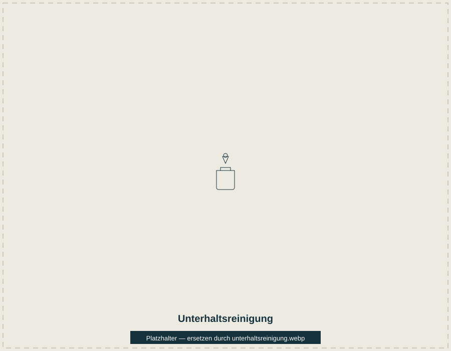

Unterhaltsreinigung
Die Unterhaltsreinigung bildet die Basis für ein dauerhaft gepflegtes Erscheinungsbild Ihrer Räume. Wir reinigen Böden, Oberflächen, Arbeitsbereiche und Sanitärräume in einem mit Ihnen abgestimmten Rhythmus – ob täglich, wöchentlich oder nach individuellem Plan.
Geeignet für: Büros, Praxen, Studios, Gewerbeflächen
Anfrage zu Unterhaltsreinigung